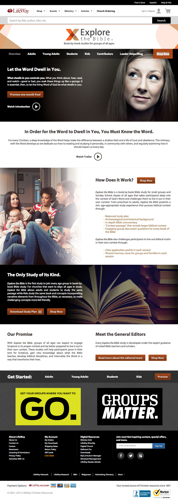
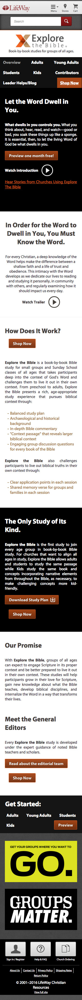

<div class="grid port-item">
  <div class="grid__item one-whole port-item__title">
    <h1 class="post__title">Explore the Bible</h1>
  </div><!--
--><div class="grid__item one-whole port-item__content text">
    <p>A branding site built on LifeWay.com. <strong>Contributions:</strong> HTML, CSS, and JavaScript.<!--
      This group of pages was coded to be both responsive and static since, at the time, we had a separate mobile site that ommitted all of this type of content. Through the use of sass, I styled a base.scss and generated both a desktop and a mobile stylesheet, each with custom styles (static vs resposive), pulling in the base.scss first. --></p>
  </div><!--
--><div class="grid__item one-whole s--three-quarters push--s--one-quarter port-item__img">
    <div class="port-item__img-wrap">
      
    </div>
  </div><!--
--><div class="grid__item one-whole s--one-quarter pull--s--three-quarters port-item__img">
    <div class="port-item__img-wrap">
      
    </div>
  </div>
</div>
